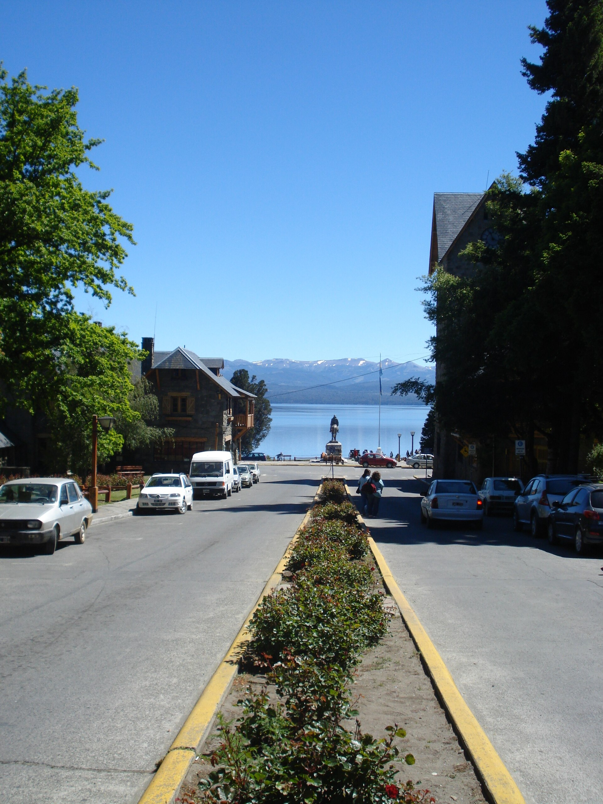
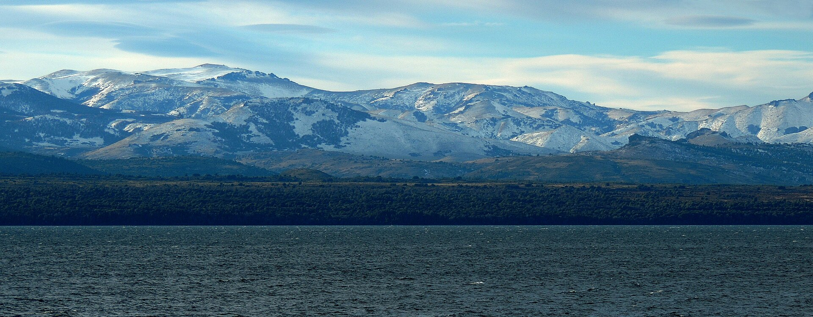

Centro Cívico
El Centro Cívico abre la costanera y el lago. Si se muda al Centro, camina hasta Mitre y al agua.
San Carlos de Bariloche · lago Nahuel Huapi
Venta o alquiler permanente en Bariloche y el sur cercano. No es estadía de hotel. El paisaje es el lago, los cerros y el bosque.

La comarca
Toque un recuadro para ver solo esas propiedades. El pin marca el barrio, no la parcela.
Toque un nombre para filtrar esa zona.
Avisos nuevos
El estudio marcó estos avisos como nueva publicación. Llevan el sello en la foto y junto al precio. No es un ranking de visitas.
Precio
El estudio bajó el precio de estos avisos. Se ve el valor anterior tachado y el sello en la foto. No es un descuento inventado por la web.
Lugares
Mudarse
No hay una promesa de plusvalía ni de alquiler turístico. Estas fichas son para quien busca casa, cabaña o lote para vivir de forma permanente, o como segunda vivienda.
En el Centro se camina hasta la costanera. En Llao Llao, Circuito Chico o Dina Huapi la vista al agua puede ser parte del lote. Mire la ficha: no todas dan al lago.
Nieve y frío son normales. Conviene hogar a leña, radiadores o losa radiante, y cochera si no quiere dejar el auto a la intemperie.
Melipal, Colonia Suiza y El Bolsón son más quietos que Mitre en temporada. El Centro tiene comercios a la vuelta. El Bolsón está a unas dos horas por la ruta 40.
La mayoría de estas fichas son para vivir el año. Si la casa sirve también de segunda vivienda, lo dice el texto. No ofrecemos rentabilidad ni inversión segura.
Para el estudio
El catálogo de esta web sale del panel. Desde ahí se puede conectar Mercado Libre y armar el aviso para Instagram, Facebook o WhatsApp. Zonaprop y Argenprop se suman si hay cuenta. Los avisos pagos de cada portal se contratan aparte.